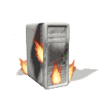

smudging is a ritual that cleanses a space by burning certain herbs and/or resins. originally practiced by native americans, it has since become very popularized. this is problematic, as mentioned in class, because smudge sticks are being mass produced, and large non-native corporations are mass harvesting the ingredients that are used to make smudge sticks. this leaves very little, if any ingredients for the native americans that created and still practice smudging.
i personally find the ideas of smudging and cleansing really interesting and i wanted to try to adapt them in a digital manner. this not only fits the themes of the class (and the assignment), but it doesn't include any real world, tangible ingredients.
in order to create a digital cleansing ritual, we need to determine what exactly we're cleansing, and what 'cleansing' means in a digital context. antivirus programs come to mind, since they 'cleanse' computers of malicious programs. but antiviruses already exist, and they aren't really ritualistic: there's no way to execute an antivirus other than just literally executing the app.
today, many antivirus programs also have features that 'clean up' your computer by clearing unwanted files. this is the approach that i want to take with this project.
e-smudging is a series of actions that 'cleanse' your devices. to practice e-smudging, follow this manual
when writing the manual, i decided to focus mainly on portable 'daily' devices. it's very much aimed toward phones, tablets, and laptops. if i were to revise the project, i would probably make the manual broader, and include what to do for, say, a game console. on the other hand, i could add a disclaimer that it's specifically for portable devices, but that seems kinda lame.
in terms of format, it's obviously just a web page. very simple html and css. if i were to continue working on the project, i would probably make it more visually interesting. the old internet sort of style is fun, and i personally really love it and want to do a lot of work with it, but i feel like with this project there's more i could include, like images or interactivity.
the format is also a source of conflict. the manual encourages people to disengage from their devices, or at least engage in a different way. that's difficult though, when the manual is a webpage. it could be printed out, but that would completely rule out interactivity.